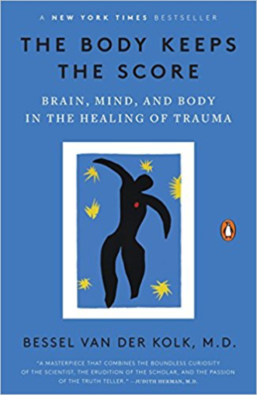

Michael Hempseed
TEDx Speaker
Professional Speaker
Business Owner
Writer

Videos and Books
Trauma Videos
- Nadine Burke Harris
- Dr Burke-Harris gives a brief overview of the Adverse Childhood Experiences Study. She discusses the link between untreated childhood trauma and early mortality.
- Bessel van der Kolk
- A 100 minute summary of his must read book, The Body Keeps the Score: Brain, Mind, and Body in the Healing of Trauma
- Leslie Morgan Steiner
- Why do people stay in abusive relationships
- Ken Clearwater - Male survivor of sexual abuse
Trauma Books
- The Body Keeps the Score:
- Brain, Mind, and Body in the Healing of Trauma 
- by Bessel van der Kolk M.D.
- The Deepest Well:
- Healing the Long-Term Effects of Childhood Adversity
- by Nadine Burke Harris M.D.
- It Didn't Start With You:
- How Inherited Family Trauma Shapes Who
- We Are and How to End the Cycle
- by Mark Wolynn